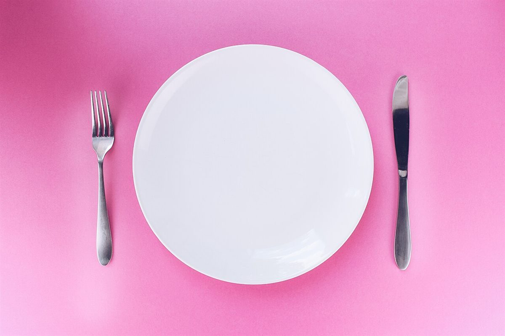
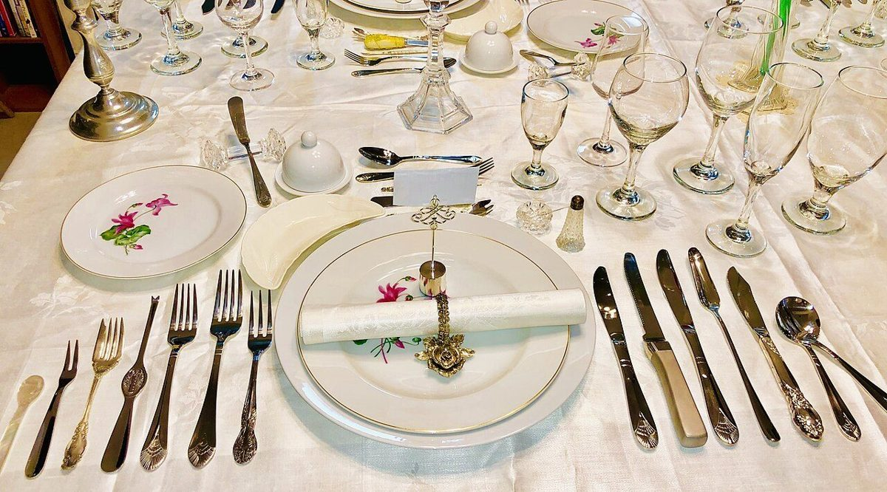
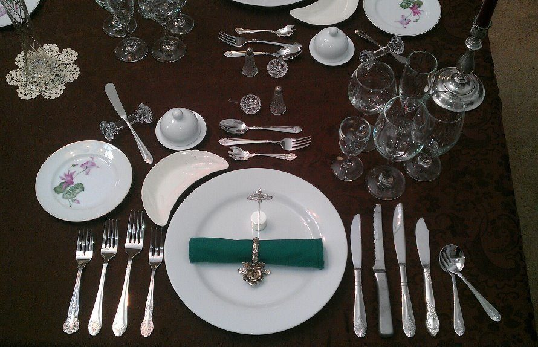
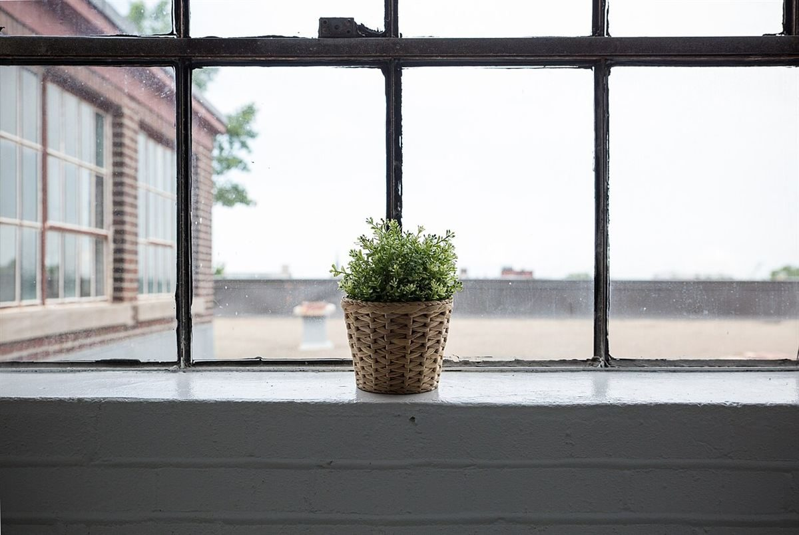

店のこと
店のこと
お店について確認できているのは、所在地・電話番号・Instagramのアカウントです。
このページの「分けてみる」部分は、制作側が連想して書いたものです。お店の実際の様子・考え・メニューとは関係がありません。
人
確認できていること
- 店名は「肉屋カフェ」、業種はカフェ
- 所在地は岡山県高梁市南町157(〒716-0033)
- 電話番号は0866-22-2068
- 営業時間・定休日・メニュー・価格・ご予約・駐車場は準備中
人撮影地不明のイメージ
確認中のこと
店名の由来や、お店の歴史・こだわりは確認できていません。分かり次第、お店にご確認のうえ掲載します。

分けてみる
冂の下に、人がふたり
「肉」の字を、屋根の形の「冂」と二つの「人」に見立てて、このサイトでは屋根形の枠のなかに二つの内容を並べています。字の見立てにすぎず、お店の考えを説明するものではありません。


